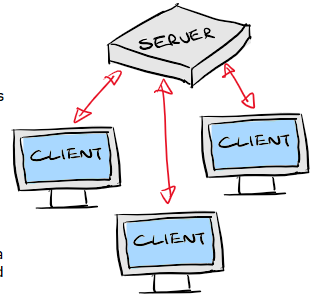
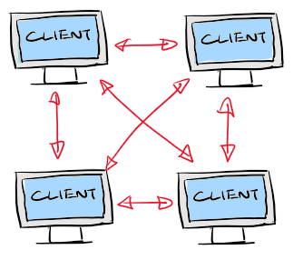

A network is a group of devices connected, used to allow your computer to exchange data, e.g.
Share files between devices on the same LAN network
Request / Recieve data via another computer on the internet, via the network's modem
Communicate with a local device, e.g. a printer, to "share resources"
Communicate with a local device lika NAS server, to back up or access files
LAN - local area network.
This refers to the network inside a building or house. Deviecs conencted to this network can communicate
Ethernet cables connect devices to a network switch, which routes data either to another device or to the internet.
Shorter physical distance between devices, so faster speeds than internet, low latency. Good for gaming/LAN party with everyone in one room
WAN - Wide area Network
Effectively the internet. A network over a huge area, globally or across a country/city.
Connects multiple LAN networks together
connected via fibre optic cables, and sometimes microwave radio, transmitted/relayed thru satellites
longer distance to travel, thus slower, higher latency.
WLANs are effectivley just WiFi.
Confusinglly, they're not actually thier own discrete type of network. They are kind of a subcategory of a LAN.
In a LAN network, say an office, some devices like servers and desktops can be connected via ethernet for maximum speeds...however devices like phones and smartwatches can INSTEAD use WLAN (wifi) rather than plugging in an ethernet cable, for convenience.
WLANs, or WiFi, uses radio signals at 2.4 or 5 GHz to connect devices to a Wireless Access Point (commonly known as "router"). Access points recieve and transmits WiFi radio signals, and relay them via ethernet cables to either other devices on the LAN, or via the modem to the internet.
The more routers/access points there are, the better the signal coverage across a site, so the faster the connection (relative to where the user is standing, there's likely to be a router closer by
A server is a computer that PROVIDES resources/data to other computers.
Clients are used by the user, which request for services.
There are two ways you can host data on a network:
Client-server network:
A central server is in charge of the network and provides access to resources/data for clients.
Clients can request for resources/data from the server, and the server responds and sends data/resources back to the user.
Servers handle access control - who is allowed to acceess what information, and they identify the user via their user account and password authentication.
There are different types of servers which do different things - e.g. file servers / NAS, wich stores files that can be accessed by users connected to the network, or email servers, or web servers.
Peer-to-peer network:
There is no single central server. Instead, each device can act like a server or a client. it is able to request other devices for their data or resources, as well as provide access to their own resources for other clients/devices upon request.
Each device is responsible for the security and backing up their own data, making the data on the network less secure overall. (because data on the device is lost if it is damaged, exposed to cyber-attacks, or if backups are not done.)
Public networks are public - effectivley mobile data networks.They're owned/operated/managed by telecomms companies, where the user can access it by paying a fee. Authentication happens via an account and the associated SIM card, thus there's no password needed.
Private networks are owned by individual companies, which pay for internet access themselves, and manage the hardware - modems, access points, and sometimes file servers. Private companies are responsible for them, including only allowing trusted users to use the network by authenitcating them with a username/password.
Thin clients are devices which have limited processing power, so they rely on servers to process tasks for them, which is then returned back to the thin client
EFFECTIVELY, they outsource all the computing to a server, so the device itself can be cheap as it needs minimal processin gpower. every time it needs to complete a task, it simply requests the server to do it, which will return the data.
This means that, obviously, a device needs constant connection to a serer to work. I like to think of it as a way to remotely access a server. Really, a thin client is just a monitor and keyboard/mouse (plus some lightweight software) that remotely connects to another computer, which does all the real, actual processing.
In contrast, a "thick" client is just a regular device - the processing happens onboard the device itself, and doesn't rely on a server to process anything (other than requesting/recieving data, which is a separate matter). When offline, it can still run local programs and access local files.